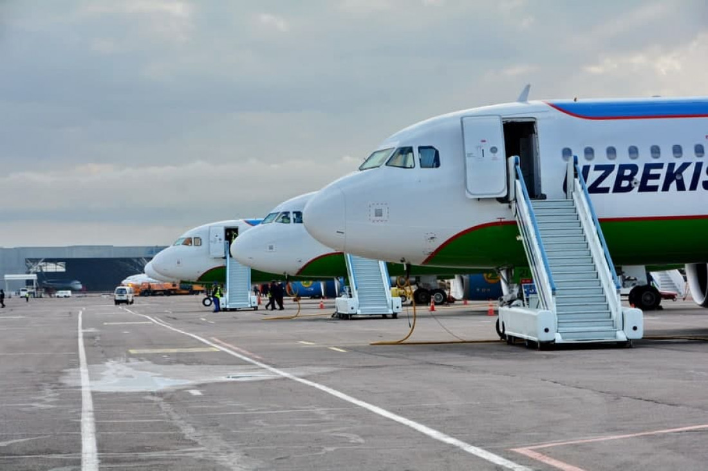
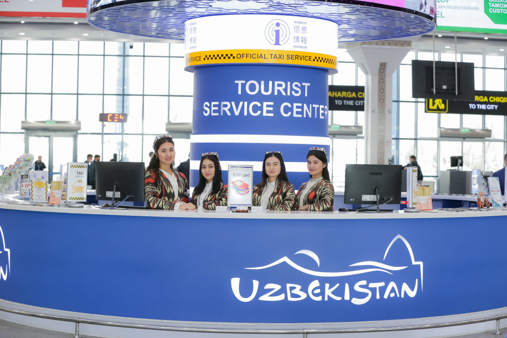
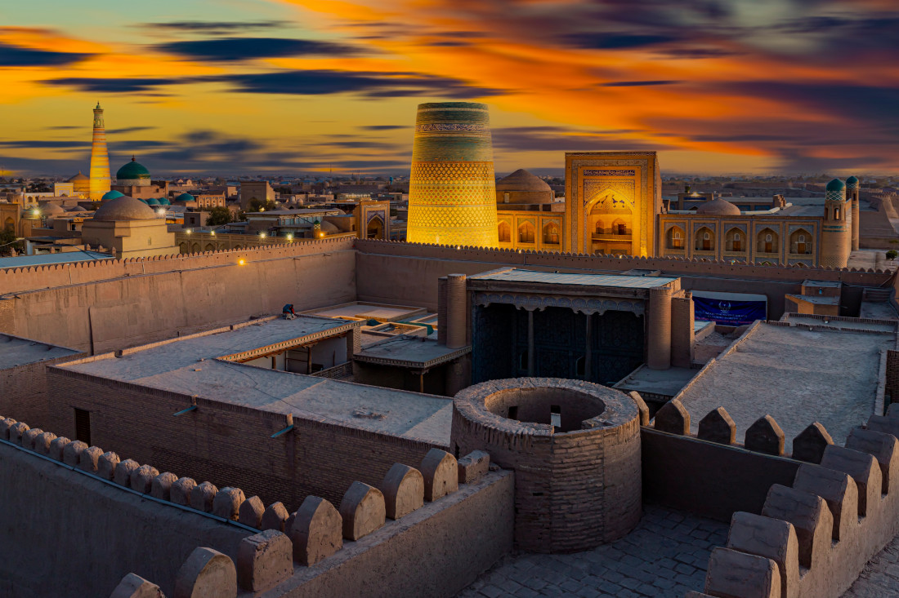

O‘zbekistonga tashrif buyurgan aksariyat sayyohlarning yoshi 31-55 yoshni tashkil qildi
2023-yilda xorijiy davlatlardan O‘zbekistonga jami 6,6 million nafar sayyoh tashrif buyurdi.
Xususan, qo'shni davlatlardan o‘tgan yili jami 4 364,8 ming nafar turist tashrif buyurdi va bu 2022-yilga nisbatan 283 foizga ko‘pdir. Shuningdek, qolgan Mustaqil Davlatlar Hamdo'stligi davlatlaridan 606,4 ming nafar (2022-yilga nisbatan 291 foizga ko'p), uzoq xorij mamlakatlaridan 261,6 ming nafar (2022-yilga nisbatan 198 foizga ortiq) turist yurtimizga keldi.
Jumladan, Turkiyadan 75,5 ming (2022-yilga nisbatan 171 foizga ko'p), Janubiy Koreyadan 19,9 ming (2022-yilga nisbatan 347 foizga ko'p), Germaniyadan 17,7 ming (2022-yilga nisbatan 257 foizga ko'p), AQSHdan 13,1 ming (2022-yilga nisbatan 242 foizga ko'p), Fransiyadan 11 ming (2022-yilga nisbatan 372 foizga ko'p) hamda Buyuk Britaniyadan 10,5 ming (2022-yilga nisbatan 264 foizga ko'p) turist yurtimizni ziyorat qildi.

Shuni alohida ta'kidlash kerakki, 2023-yilda mamlakatimizga kelgan turistlarning 49,6 fozini 31 yoshdan 55 yoshgacha bo‘lgan kishilar tashkil qilgan. Shuningdek, xorijlik turistlarning 723,3 ming nafari - 18 yoshgacha bo'lganlar, 846,5 ming nafari – 19 yoshdan 30 yoshgacha bo'lganlar hamda 1 069,6 ming nafari 50 yoshdan oshgan kishilar bo'ldi.

Xiva - Turk dunyosining poytaxti
Xiva - qadimiy devorlar, minoralar va loydan qurilgan betakror binolar shahri. Islom hamkorlik tashkilotining (IHT) Bokuda boʻlib oʻtgan XI sessiyasi doirasida Xiva 2024-yilda islom olamining turistik poytaxti deb eʼlon qilindi!
Xivaning yoshi 2500 yildan oshgan. Agar siz tarixga sho‘ng‘ishni va qadimiy Sharqning haqiqiy go‘zalligini ko‘rishni istasangiz, Xivaga tashrif buyuring.
Samarqand - Madaniyatlar chorrahasi
Samarqandni chinakam noyob shahar, deb atash mumkin!

Dunyoning eng buyuk shoir va faylasuflari uni - qalb bog‘i, sharq durdonasi, dunyoning ko‘zgusi va hatto yer yuzi deb atashganlarida ham, ular bu go‘zal shaharning barcha go‘zalligi va boyliklarini tasvirlab berolmagan bo‘lardilar.
.jpg)